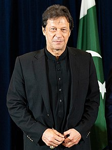

Imran Khan, born on October 5, 1952, in Lahore, Pakistan, is a multifaceted personality known for his cricketing
prowess, philanthropic ventures, and political leadership. From leading Pakistan to its first cricket World Cup
victory in 1992 to becoming the country's Prime Minister in 2018, Khan's journey has been nothing short of
remarkable.
Early Life
Imran Khan was born into an affluent Pashtun family in Lahore. He attended Aitchison College in Lahore
and the Royal Grammar School Worcester in England. Khan later enrolled at Oxford, where he studied
Philosophy, Politics, and Economics. His educational experiences played a pivotal role in shaping his
worldview.

Cricket Career
Imran Khan's cricket career spanned over two decades, from 1971 to 1992. Known for his fierce
competitiveness and all-round skills, Khan captained the Pakistan cricket team for many years. Under his
leadership, Pakistan clinched its first World Cup title in 1992.
Transition to Politics
After retiring from cricket, Khan transitioned to politics and established the Pakistan Tehreek-e-Insaf
(PTI) party in 1996. While the early years were challenging, Khan's persistent efforts led to PTI
emerging as a dominant political force in the country.
Formation of PTI
Pakistan Tehreek-e-Insaf (PTI), founded by Imran Khan in 1996, advocates for a modern and progressive
form of Islamic governance in Pakistan. The party's main agendas are anti-corruption, good governance,
and a vision for a "New Pakistan".
Prime Ministership
After a fiercely contested general election in 2018, Imran Khan became the Prime Minister of Pakistan.
His tenure has been marked by various reforms aimed at socioeconomic upliftment, good governance, and
enhancing Pakistan's image on the global stage.
Achievements
Imran Khan's political journey has been marked by several key initiatives, including the Ehsaas Program
for poverty alleviation, the Kartarpur Corridor's opening for Sikh pilgrims, and efforts to improve
Pakistan's global image and foreign relations.
Key Moments
Policies
Controversies
Personal Life
Legacy
Some key moments in Imran Khan's life include leading Pakistan to its maiden World Cup victory in 1992,
establishing Shaukat Khanum Memorial Cancer Hospital & Research Centre in memory of his mother, and becoming
the Prime Minister of Pakistan in 2018.
Khan's policies as Prime Minister have largely focused on socioeconomic upliftment, improving governance,
and strengthening foreign relations. The Ehsaas Program, Kamyab Jawan Program, and housing schemes are some
of the key initiatives launched under his leadership.
Like many political leaders, Imran Khan's career has not been devoid of controversies. These range from
political rivalries and election rigging allegations to personal life speculations. However, Khan has always
faced them head-on and addressed them publicly.
Imran Khan has been in the spotlight not just for his professional achievements but also his personal life.
He has been married thrice: first to Jemima Goldsmith, then to Reham Khan, and currently to Bushra Bibi. He
has two sons from his first marriage.
Imran Khan's legacy is multifaceted. From his cricketing heroics and philanthropic ventures to his political
journey, Khan has left an indelible mark. His determination, leadership skills, and vision for a prosperous
Pakistan will be remembered for generations.